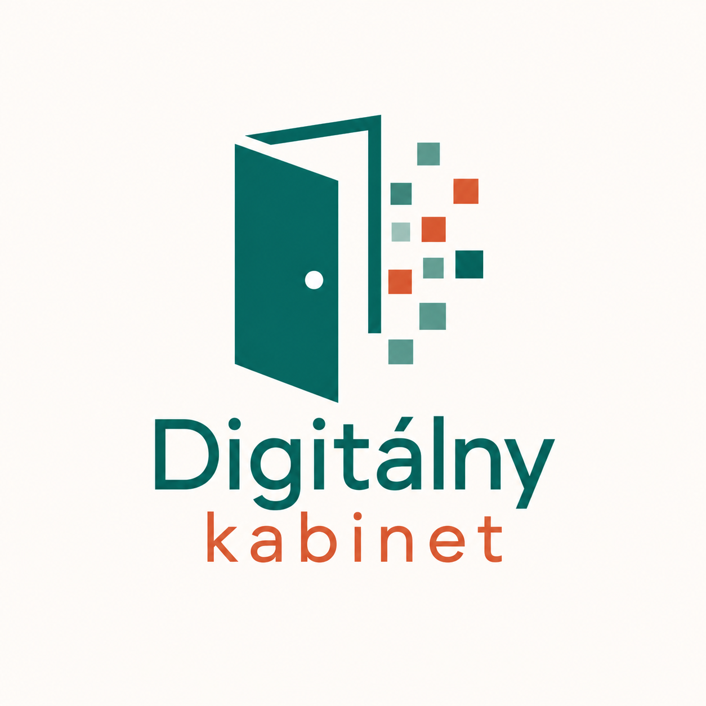

Občianske združenie
Webináre a vzdelávanie zamerané na efektívne využitie umelej inteligencie a IT nástrojov v praxi, ako aj na metódy CLIL a PBL — pre učiteľov predprimárneho, primárneho aj sekundárneho vzdelávania.

O nás
Sme občianske združenie Digitálny Kabinet. Poskytujeme webináre a vzdelávanie pre učiteľov v oblasti efektívneho využitia umelej inteligencie a IT nástrojov v praxi, ako aj metód CLIL (Content and Language Integrated Learning) a PBL (Project Based Learning — projektové vyučovanie). Naše vzdelávanie je určené pedagógom všetkých stupňov — od predprimárneho, cez primárne až po sekundárne vzdelávanie.
Ekonómka
Marketing manažérka
Lektorka
Pripravujeme
Pripravujeme akreditovaný program inovačného vzdelávania v rozsahu 50 hodín, zameraný na umelú inteligenciu, určený učiteľom materských, základných a stredných škôl, ktorí chcú rozvíjať svoje digitálne kompetencie a efektívne využívať AI pri plánovaní, realizácii a hodnotení vyučovania.
Vzdelávací program prepája moderné digitálne technológie s overenými pedagogickými prístupmi, ako sú CLIL metodika, projektové vyučovanie (PBL), formatívne hodnotenie a kolaboratívne učenie. Dôraz kladieme na praktické využitie získaných poznatkov, bezpečné a etické používanie umelej inteligencie a tvorbu vlastných digitálnych riešení využiteľných v každodennej pedagogickej praxi.
Efektívne využitie AI pri príprave hodín, tvorbe pracovných listov, testov, prezentácií a diferencovaných úloh.
Tvorba vlastných AI asistentov na prípravu vyučovania, spätnú väzbu, spoluhodnotenie a plánovanie projektov.
Tvorba jednoduchých webových aplikácií, interaktívnych pomôcok a digitálnych hier bez potreby programovania.
Prepájanie predmetového obsahu s cudzím jazykom a príprava moderného bilingválneho vyučovania s podporou AI.
Návrh projektových aktivít podporujúcich tvorivosť, kritické myslenie a riešenie reálnych problémov.
Nástroje na kvalitnú spätnú väzbu, tvorbu hodnotiacich kritérií, rubrík a využitie AI pri hodnotení žiakov.
Digitálne prostredie podporujúce spoluprácu žiakov, efektívnu komunikáciu a zdieľanie výsledkov práce.
Bezpečné, zodpovedné a etické využívanie AI, ochrana osobných údajov, autorské práva a digitálna gramotnosť.
Pre koho je program určený?
Učiteľom materských škôl · učiteľom základných škôl · učiteľom stredných škôl · školským digitálnym koordinátorom · vedúcim pedagogickým zamestnancom · všetkým pedagógom, ktorí chcú rozvíjať svoje digitálne kompetencie a pripravovať žiakov na svet 21. storočia.
Náš cieľ: Naším cieľom nie je naučiť učiteľov používať niekoľko AI aplikácií. Chceme, aby dokázali premyslene prepájať umelú inteligenciu, digitálne technológie a moderné pedagogické prístupy do každodenného vyučovania — tvoriť vlastné digitálne materiály, navrhovať AI agentov a jednoduché aplikácie, podporovať spoluprácu žiakov, efektívne hodnotiť ich pokrok a viesť deti k bezpečnému, kritickému a zodpovednému využívaniu technológií.
Pripravujeme akreditovaný program inovačného vzdelávania. Sledujte nás a buďte medzi prvými, ktorí získajú prístup.
Témy, ktorým sa venujeme
Ako využiť nástroje AI pri príprave hodín, tvorbe materiálov a hodnotení žiakov — bezpečne a efektívne.
Prepájanie obsahu predmetu a cudzieho jazyka — metodika, ukážkové hodiny a hodnotiace nástroje.
Ako viesť žiakov k samostatnej práci na reálnych projektoch naprieč predmetmi a stupňami vzdelávania.
Praktické tipy na aplikácie a platformy, ktoré uľahčujú prácu učiteľa a robia hodiny atraktívnejšími.
Materiály zadarmo
Vybrané materiály pre učiteľov na voľné použitie. Postupne budeme pridávať ďalšie.
Kontakt
Napíšte nám na e-mail a ozveme sa vám čo najskôr.
Napísať e-mail